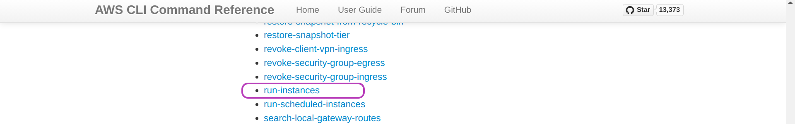

The Scripts Design
This episode has no hands-on activities but you should have covered the two previous episodes, Instances Management Tasks Using the Scripts and AMIs Management, to better understand the concepts presented in this episode.
Overview
- The Scripts Design
How the Scripts are organised and how they work internally are the subjects of this section. - The AWS CLI Command Reference
The Scripts functionality depends on the AWS CLI commands. This section briefly describes the AWS CLI interface and how we used it to develop the Scripts. - Improving the Scripts
This section describes a few improvements for the Scripts that we may later undertake.
1. The Scripts Design
This section describes the organisation and workings of the Scripts. The paper Automated management of AWS instances for training, in the section “The scripts design and implementation” discusses other aspects of the scripts design that complement this section. After you read this section and that section in the paper, you will know where to look into the Scripts in case you need to improve them.
Let’s recall the Scripts names:
Output
aws_domainNames_create.sh aws_instances_terminate.sh csinstances_create.sh
aws_domainNames_delete.sh aws_loginKeyPair_create.sh csinstances_delete.sh
aws_instances_configure.sh aws_loginKeyPair_delete.sh csinstances_start.sh
aws_instances_launch.sh colour_utils_functions.sh csinstances_stop.shOrganisation into modules
Recall that you run csinstances_create.sh to create one or multiple instances specified in an “instancesNames.txt” file (whose name you can choose), and that each instance is accessed with ssh using a login key and a domain name or an IP address (if domain names are not managed).
The main code of csinstances_create.sh is below. All it does is to run the aws_*.sh scripts that actually create instances and related resources, passing to each such script the parameter it received, the path/name of the “instancesNames.txt” file which, being the first and only parameter you specify, is stored in the script variable $1
The script csinstances_delete.sh is organised and works the same way but it runs the scripts that actually delete instances and related resources instead.
csinstances_create.sh
check_theScripts_csconfiguration "$1" || { message "$error_msg"; exit 1; }
aws_loginKeyPair_create.sh "$1" || { message "$error_msg"; exit 1; }
aws_instances_launch.sh "$1" || { message "$error_msg"; exit 1; }
if [ -f "${1%/*}/.csconfig_DOMAIN_NAMES.txt" ]; then ### %/* gets the inputs directory path
aws_domainNames_create.sh "$1" || { message "$error_msg"; exit 1; }
fi
aws_instances_configure.sh "$1" || { message "$error_msg"; exit 1; }
exit 0That all means that each aws_*.sh script is in charge of:
- a single type of AWS service request (either create, allocate, .., deallocate, or delete)
- for one or multiple AWS resources all of the same type (either instance, login key, or domain name).
Each script makes an AWS service request for each instance name specified in the file “instancesNames.txt”.
Such organisation means that all login keys are created first, then all instances are created, etc. — and vice versa: all instances are deleted first, then all login keys are deleted, etc.
An alternative way to organise the Scripts would be such that: each instance and its resources (login key, etc.) are created first, then a second instance and its resources are created, and so on. But the code gets much more complicated.
Think of that alternative organisation for the Scripts or any other organisation you would like for the Scripts.
- Is it really more complex?
- Why?
- How would
csinstances_create.shbe organised? - Do we need more or fewer scripts?
If you thought of another alternative organisation, what is the main flow in creating instances and their resources?
The aws_*.sh scripts main processing steps
Each aws_*.sh script makes an AWS service request for each instance name specified in the file “instancesNames.txt” through these main steps:
getting the location of relevant “shared data” from the path of the file “instancesNames.txt (received as parameter), that is:
- the path of the configuration files
resourcesIDs.txtandtags.txt, whose content is required by the scripts that create instances and related resources. - the path of results files (in the
outputsdirectory) that contain the AWS resources IDs, which are required by the scripts that delete instances and related resources, and the scriptscsinstances_stop.shandcsinstances_start.sh.
- the path of the configuration files
making a list of instances names from the names specified in the file “instancesNames.txt”.
looping through the instances names list to request, for each instance, the script-relevant AWS service operation through running
awspassing required parameters — some parameters are extracted from the files in step 1.
The code structure of csinstances_stop.sh and csinstances_start.sh is similar to that to the code structure of the aws_*.sh scripts.
Can you figure out the reason for that (before looking at the code)?
The Scripts loop through instances names
Once an aws_*.sh script sets access to “shared data” as described above, the script goes through the loop where, for each instance name in the “instancesNames.txt” file, the script invokes the AWS service request it is in charge of.
The loop of the script aws_instances_launch.sh (which creates one or multiple instances) is shown below. We have added the line numbers on the left for convenience but they don’t correspond to the actual line numbers in the script.
aws_instances_launch.sh - main loop
01 instancesNames=( `cat $instancesNamesFile` )
02 for instanceFullName in ${instancesNames[@]}
03 do
04 instance=${instanceFullName%-src*} ### get rid of suffix "-srcAMInn.." if it exists
05 loginkey=login-key-$instance
06 aws ec2 run-instances --image-id $resource_image_id --instance-type $resource_instance_type \
07 --key-name $loginkey \
08 --security-group-ids $resource_security_group_ids \
09 --subnet-id $resource_subnet_id \
10 --tag-specifications \
11 "ResourceType=instance, Tags=[{Key=Name, Value=$instanceFullName}, $tagsAWS ]" > $outputsDirThisRun/$instance.txt 2>&1
12 if [ $? -eq 0 ]; then
13 message "`colour gl Success` creating `colour bl instance:` $instance" $outputsDirThisRun/$instance.txt
14 else
15 message "`colour red Error` ($?) creating `colour bl instance:` $instance" $outputsDirThisRun/$instance.txt
16 exit 2
17 fi
18 done
19 exit 0Line 01: the variable instancesNames is initialised as a list of the instances names in the file “instancesNames.txt” file (variable $instancesNamesFile).
Line 02: the loop starts, using the variable instanceFullName to store the instance name in turn.
Line 04: instance=${instanceFullName%-src*} store the instance name in the variable instance but without the suffix -srcAMInn (%-src*) that identifies the source AMI template to create the instance, if it was specified, see the section Instances names we use in the previous episode.
Line 05: loginkey=login-key-$instance store the login key name in the variable loginkey to pass it as parameter to aws (in line 07). Each login key name is created with the fixed prefix login-key- concatenated to the instance name (in the instance variable).
Lines 06-11 is a single command — the character \, at the end of lines 06-10, tells Bash to carry on reading input before running the command. This command runs the AWS CLI program, which is called aws, requesting to launch an instance, passing various parameters including: --image-id (AMI id), .. and the tags in the variable tagsAWS (previously loaded from the file ../inputs/tags.txt). The parameters to aws are discussed below.
Line 11: the results of invoking aws are stored in the file whose name is specified by the value in the variables $outputsDirThisRun/$instance.txt which were previously defined before and within the loop, respectively. Both results and any errors, if any, are written to that file (2&1).
The loops in the other scripts
The loop in each of all other aws_*.sh scripts is similar to the loop shown above in that:
- the
instanceloop variable is used to create the name of other files to access therein data that is relevant to the function of the script. Recall that:
“Each instance name is the key to access each instance results files in theoutputsdirectory”. awsis run to make the corresponding AWS service request.- results and errors of invoking
awsare saved to a file in theoutputs/script-results/ directory.
The loop in the scripts below are somewhat different to all others:
aws_domainNames_create.sh:
Before invokingawsto create a domain name (for theinstancebeing processed in the loop),aws_domainNames_create.shcreates a .json file with the details of the domain name to be created, and then invokesawspassing the path of that file as a parameter along with other parameters.aws_loginKeyPair_create.sh:
After invokingawsto create a login key (for theinstancebeing processed in the loop), if the invocation was Successful,aws_loginKeyPair_create.shunpacks the login key from the results file (of invokingaws) into a.pemfile. Such results are returned in .json format, which includes a key-value pair for each item of information returned, for example: “KeyName”: “login-key-instance01”; “KeyPairId”: “key-0f2702d75934347e4”; “KeyMaterial”: “the-login-key-itself”, among other items of information. The value of “KeyMaterial” is extracted from the resuts file, and somewhat processed before writing it onto a.pemfile. Such processing is required for the login keys to work in MacOS machines.aws_instances_configure.sh,csinstances_stop.sh, andcsinstances_start.sh:
The loop through instance names in these scripts is somewhat more complex than in the other scripts, as configuring, stopping and starting instances require different handling depending on whether domain names are managed or not, and these scripts handle both scenarios.
2. The AWS CLI Command Reference
The code box below shows some of the aws (AWS CLI) commands used by the Scripts. For each command, only the first three parameters passed to aws by the Scripts are shown. The Scripts pass quite a few more parameters to those commands as exemplified by the code of aws_instances_create.sh above.
Code
aws ec2 create-key-pair --key-name ..
aws ec2 delete-key-pair --key-name ..
aws ec2 run-instances --image-id ..
aws ec2 terminate-instances --instance-ids ..
aws route53 change-resource-record-sets --hosted-zone-id ..
aws ec2 describe-volumes --filters ..The first parameter to aws identifies the target AWS service: ec2 and route53 (in the code box). The service ec2 stands for Elastic Compute Cloud which comprises quite a few sub-services or resources such as: login keys, AMI, IP addreses, volumes, snapshots, etc. The service route53 is the one that deals with domain names.
The second parameter (create-key-pair, .., or describe-volumes) is the operation we want the AWS service to perform. Each of the operations above has the form verb-noun, or action-onWhat, thus identifying the type of EC2 resource on which the operation is to be applied.
The following parameters (third, fourth, etc.) are organised as “key value” pairs (see the code of aws_instances_launch.sh above). These are parameters to the operation (the second parameter to aws), and serve both to identify the target specific AWS resource to be affected and to specify how the resource will be affected by the operation requested.
The AWS CLI (aws) is extremely powerful and flexible. The Scripts only use only a minor part of it. The AWS CLI enables you to access and modify any AWS service and any type of resource within each service. At the time of writing, there are over 100 AWS services of which EC2 is one of them; EC2 has over 200 operation-resource operations.
If you plan to improve the Scripts and this involves changing the aws commands in the Scripts, you need to consult the AWS CLI Command Reference — the landing page is shown below.
Overall, in trying a new aws command you should aim to have a simple version of the new command running as soon as possible and then tune it gradually. For this purpose, look at the relevant examples in the AWS CLI Command Reference. The screenshots below show you how to get to the Examples of the aws ec2 run-instances command that creates (runs and launches) instances. Our Script aws_instances_launch.sh uses a version of those examples.
On the “AWS CLI Command Reference” page, click on Available Services and scroll down until you find ec2 and click on it.
The page of “ec2” will be presented. Click on Available Commands and scroll down until you find run-instances and click on it.

The page of “run-instances” will be presented. Click on Examples.
The page below will be presented. You can see the resemblance between the code in the examples below and the code in our Script aws_instances_launch.sh. The main difference being our use of shell variables to tune the aws command within the loop according to each instance name, etc.
We developed all the Scripts starting with the relevant examples in the AWS CLI Command Reference.
3. Improving the Scripts
The Scripts provide enough functionality to manage well one or multiple AWS instances in the context of hands-on training and similar contexts, wherein each instance is to be used by a single person for a relatively short period of time.
Other contexts will most likely need modifying the scripts and, of course, the scripts can be improved somehow. This is a list of improvements that we have identified:
Handling comments in the configuration files
tags.txtand “instancesNames.txt” files. This will make those files more readable.Code naming conventions and comments in the Scripts can be improved.
Adding the
--dry-runoption to the Scripts would facilitate development. The AWS CLI (aws) supports a--dry-runand it would be a matter of handling that option within the Scripts.
Congratulations! You have completed the Automated Management of AWS Instances course.